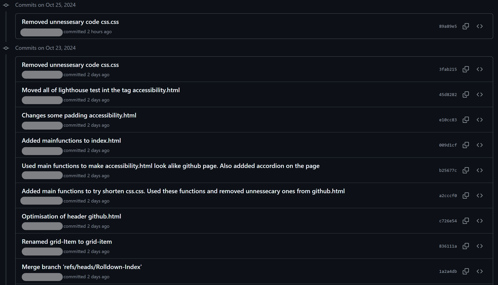
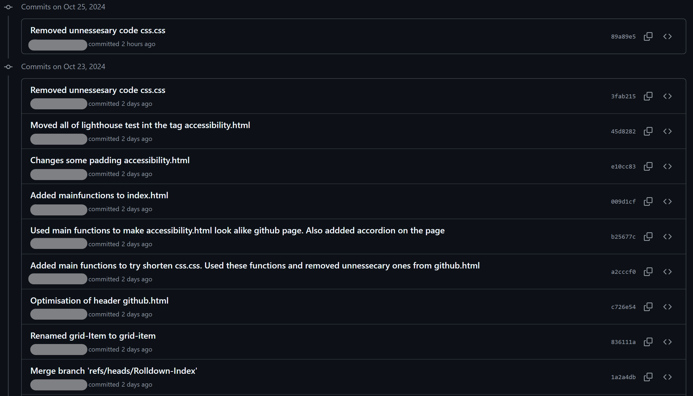

Velkommen til Github
På denne siden vil du finne bilder som viser deler av "commit" historikk og spesifikke endringer. Det vil også være en kort tekst om samarbeid i "repositories" som GitHub
Bilder som viser deler av "commit" historikk
 

Bilder som viser en spesifikk endring

En kort liste over fordelene med Git og Github i Visual Studio Code
Enklere å sammarbeide
Når man jobber i et team er det viktig å samarbeide godt sammen og gå gjennom koden for å sørge for at det blir god kvalitet på slutt resultatet. Github sammen med Visual Studio Code kan gjøre det enklere å samarbeide med andre siden man får tilgang til GitHub sine verktøy i Visual Studio Code. Dette gjør det mulig for utviklere å blant annet se gjennom kode, opprette og administrere "pull"-forespørsler, legge til kommentarer og arbeide sammen i nå-tid. Dette gjør at man slipper å måtte bytte til en nettleser, da man kan bli i Visual Studio Code og fortsatt ha tilgang til Github sine verktøy.
Git "branches"
"Branches" er en viktig del av Git fordi de kan gjøre det mulig for utviklere å jobbe med forskjellige funksjoner, uten at det påvirker "main"-koden. I Visual Studio Code kan man opprette nye "branches", byte mellom dem, og slå de sammen med "main-branch" ved behov. Ved å opprette disse "branches" kan utviklere jobbe og teste endringene sine separat fra "main-branch". Dette kan bidra til å holde arbeidet organisert, og redusere sjansen for at det oppstår konflikter mellom ulike deler av kode. Hver "branch" kan fokusere på en spesifikk oppgave eller funksjon, noe som kan gjøre det enklere å gjennomgå og slå sammen endringer underveis.